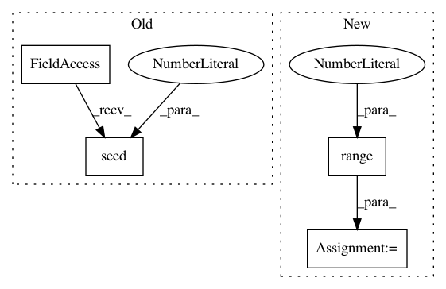

8051248bedd7387babba24c5756c286987c42eb1,asv_bench/benchmarks/hash_functions.py,,setup,#Any#Any#Any#,53
Before Change
param_names = ["dtype", "M"]
def setup(self, dtype, M):
np.random.seed(42)
self.values = np.random.rand(M)
self.s = pd.Series(self.values).astype(dtype)
np.random.shuffle(self.values)
self.values_outside = self.values + 0.1
After Change
param_names = ["index_dtype", "N"]
def setup(self, index, N):
vals = np.array(list(range(55)) + [54] + list(range(55, N - 1)))
indices = index(vals)
self.data = pd.Series(np.arange(N), index=indices)
def time_loc_slice(self, index, N):
// trigger building of mapping
In pattern: SUPERPATTERN
Frequency: 3
Non-data size: 4
Instances
Project Name: pandas-dev/pandas
Commit Name: 8051248bedd7387babba24c5756c286987c42eb1
Time: 2021-02-21
Author: jbrockmendel@gmail.com
File Name: asv_bench/benchmarks/hash_functions.py
Class Name:
Method Name: setup
Project Name: biocore/scikit-bio
Commit Name: 3c5e7c346c8bf04dbb78235d9267528949e4141e
Time: 2014-03-03
Author: jai.rideout@gmail.com
File Name: bipy/maths/stats/distance/tests/test_permanova.py
Class Name: PERMANOVATests
Method Name: test_call_ties
Project Name: biocore/scikit-bio
Commit Name: 3c5e7c346c8bf04dbb78235d9267528949e4141e
Time: 2014-03-03
Author: jai.rideout@gmail.com
File Name: bipy/maths/stats/distance/tests/test_anosim.py
Class Name: ANOSIMTests
Method Name: test_call_ties